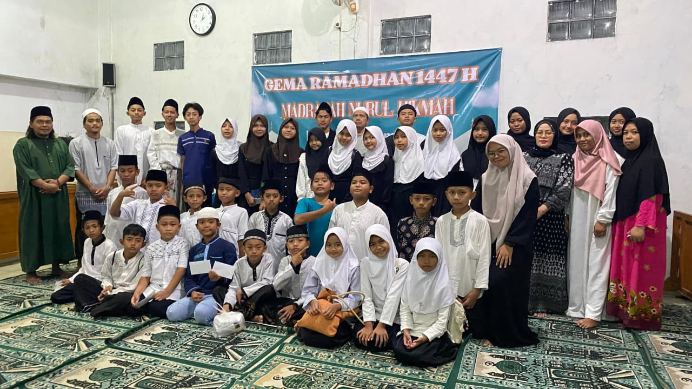

Galeri & Dokumentasi Kegiatan
Momen kebersamaan dan semangat belajar santri Kampung Cibanjaran

Kegiatan Selesai Mengaji Ba'da Maghrib
Suasana Sesudah ngaji maghrib.

Peringatan Maulid Nabi & Rajaban
Penampilan kreasi santri & Tausiah.

Pesantren Kilat Ramadhan
Perlombaan Hafalan-hafalan atau LCC dan masi banyak yang lainya.